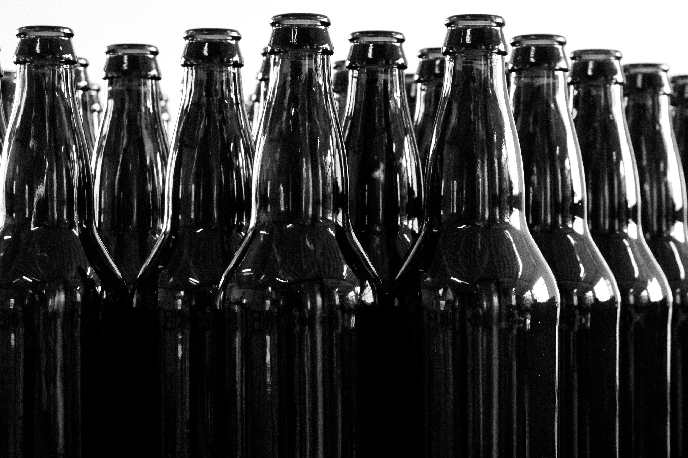

Seasonal Releases
Four exciting beers a year with wide release. Look for them when the weather begins to turn.
Baltus van Tassel: Cherry Sour
7% ABV
Fall
An American Style Cherry Sour. A rich brown American Brown sour brewed with Sweet and Tart cherries for the perfect accompaniment to shorter days and colder weather.
In the Bleak Midwinter: Black IPA
6.5% ABV
Winter
A fruity Black IPA. With only a kiss of roast, this black IPA is fresh and juicy but dark as the coldest days of winter. Citra and Mosaic are late hop additions to avoid the bitterness and focus on aroma.
The Jungle Bird: Tropical Dark Sour
5% ABV
Spring
An homage to the classic Tiki cocktail. This beer has notes of demerara sugar, bitter lime, tropical pineapple coming together for a refreshing sour that is like no other.
Bright Young Things: Hopped Wheat Ale
5.5% ABV
Summer
English Summer Ale. A style developed during a late 70’s heat wave in England, this beer is designed to refresh in the hot summer sun. Dry, with a touch of wheat and toasted Victory malt, it is balanced with a touch of bitterness and a sweet citrus aroma. Patios, BBQ’s, and friends all pair perfectly with this beer!
